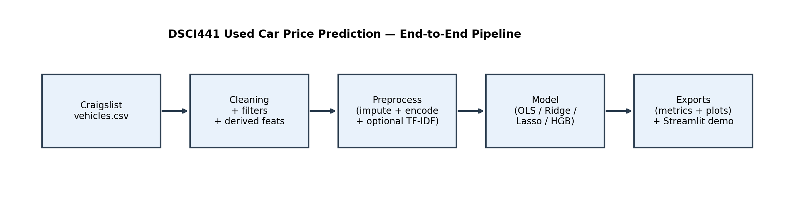
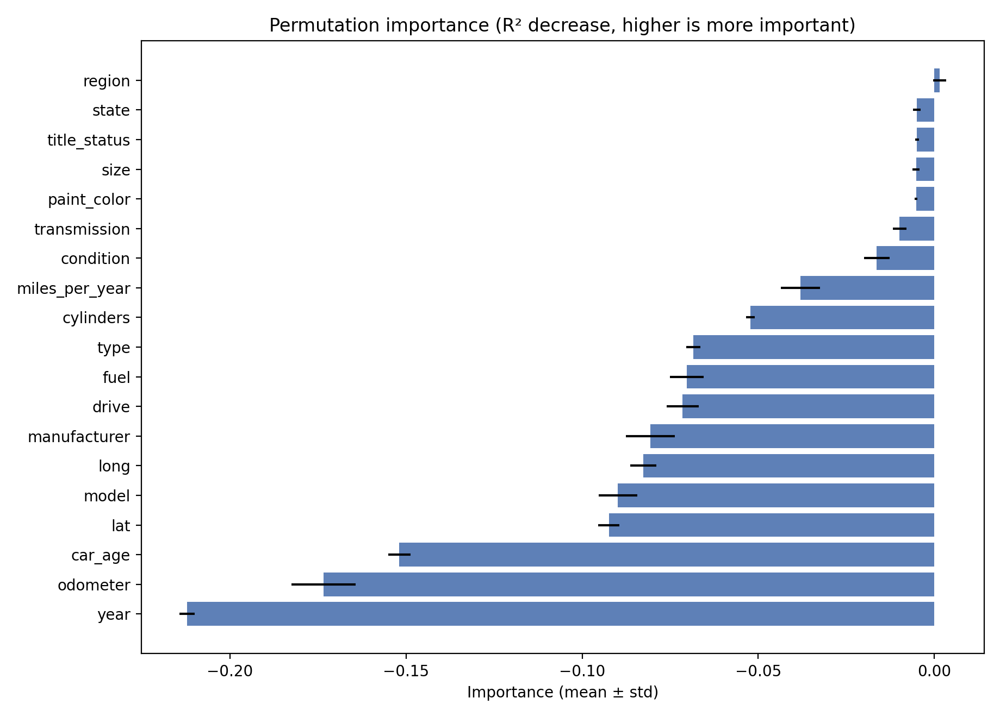
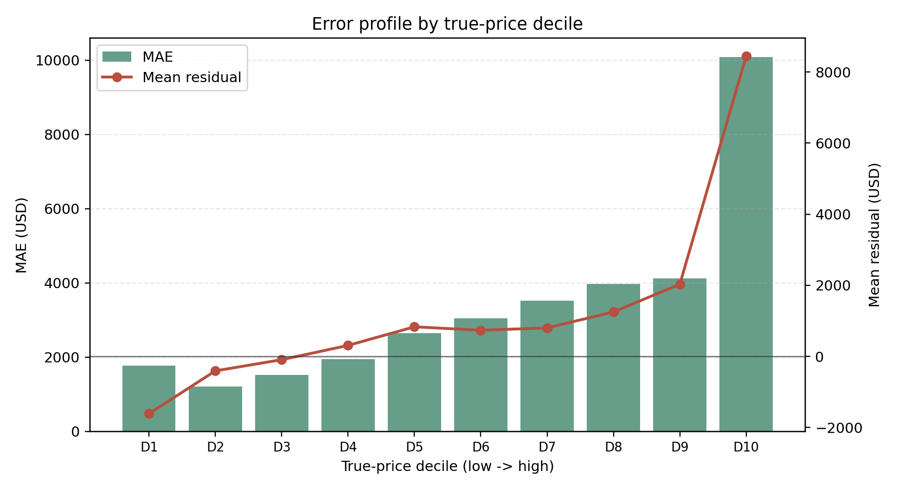
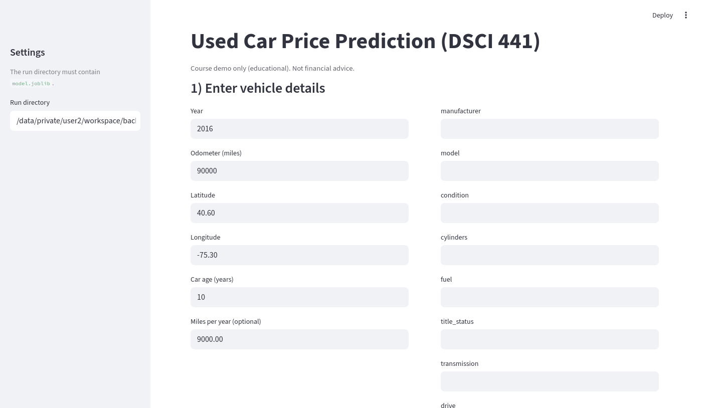

DSCI441 Course Poster
Used Car Price Prediction System
End-to-end Craigslist price regression pipeline with baseline comparison, nonlinear modeling, extension diagnostics, and deployment-facing web demo.
Best broad-domain R²
0.8061
HistGradientBoosting (`hgb_ordinal`)
Best broad-domain RMSE
$6,649
Test split (80/20, seed 441)
Extension diagnostics
6 figures
Subgroup + decile diagnostics
Problem Description / Motivation
Why used-car price regression is not a single-metric task
Price prediction must handle heavy tails, missingness, and nonlinear segment interactions. A single global RMSE can hide large differences across price ranges and vehicle segments.
- Target is strongly right-skewed.
- Many categorical fields are sparse/missing.
- Error scale increases with true price (heteroskedasticity).

Dataset Description
Craigslist listings with mixed tabular structure
The dataset contains 426,880 raw listings with numeric, categorical, and optional text fields. Cleaning and feature derivation produce a stable training table for fair model comparison.
426,880
Raw listings
17+
Core input attributes
Heavy-tail
Price distribution shape
Missingness
High in several categorical columns

Experiments / Model Selection
Linear baselines, text-augmented ridge, and boosted trees
Experiments include OLS, Ridge, Lasso, Ridge+TF-IDF, and HistGradientBoosting. The nonlinear model gives the strongest broad-domain fit while preserving a reproducible pipeline.


Evaluation
Global fit is strong, but error behavior is segment-dependent
The best model achieves high broad-domain fit, yet error distribution differs by price decile and subgroup. Extension diagnostics expose these deployment-relevant patterns.
Broad-domain best: R² 0.8061, RMSE 6649, MAE 3384.
Decile drift: MAE rises from about $1.8k to about $10.1k (D1 -> D10).



Deployment and Interpretability
From offline metrics to user-facing diagnostics
The Streamlit app provides an input -> predict interface. The extension recommends pairing predictions with subgroup/decile diagnostics so users can interpret uncertainty by market segment.

Recommended production view: show global metrics and segment-aware diagnostics together.
Future direction: segment-specific models and interval predictions for risk-aware pricing.